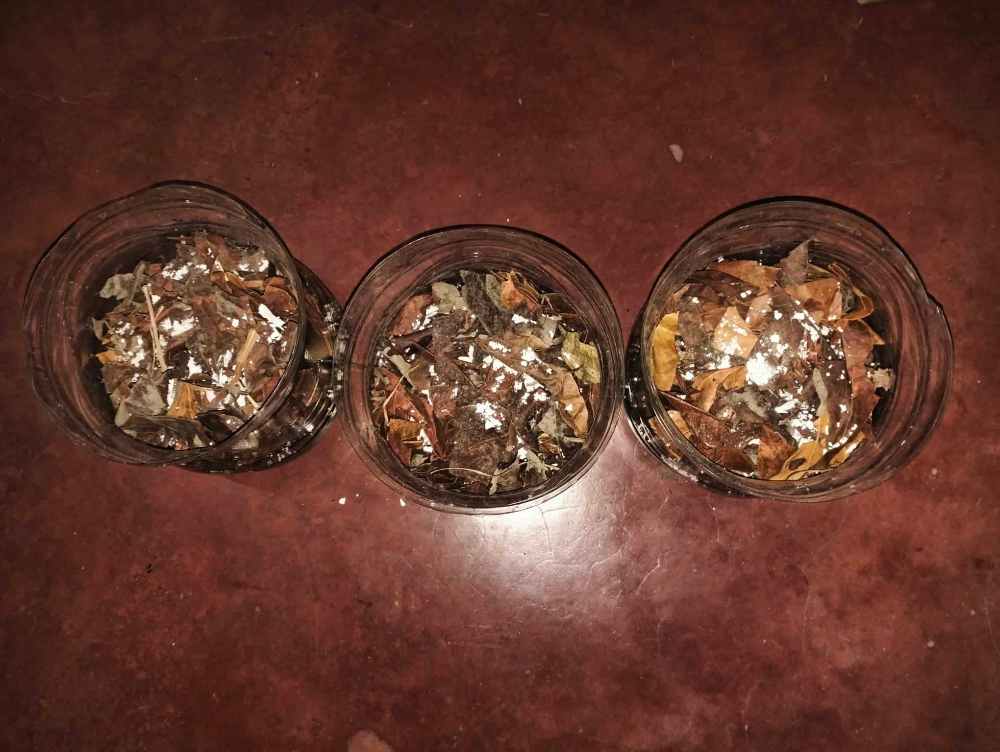

Project Paguswag
We're here. Breaking the chains of exploited women.
EFFECT OF COLD AND DIRECT COMPOSTING ON THE BASELLA ALBA PLANT
BACKGROUND AND SIGNIFICANCE
With our human labor and access to the internet, we can create advertising services that promote Talikalas' advocacy. This solution is sustainable for Talikala because these websites and posts will remain on the internet forever. Using our knowledge and skills in online and economics, we can turn this idea into something sustainable for us while also benefiting Talikala because our project helps with their issues with the lack of resources and funding.
STATEMENT
This quantitative study aims to find out the effect of applying different composting methods on the leaf size of Basella alba to save communities time and money while helping the environment as well.
HYPOTHESIS
If we use direct compost as our method of composting, then the Basella alba (Malabar spinach/alugbati) will grow larger leaves.
METHODOLOGY
| INDEPENDENT VARIABLE Type of Composting Method:
Direct Composting-(digging a hole or trench in the
ground/pot and burying your scraps).
Cold composting-(adding organic materials to a
pile, bin or bag as they are generated or become
available). |
DEPENDENT VARIABLE
Amount and size of Basella alba leaves as well as the height of the Basella alba plant.
|
CONTROLLED VARIABLE
Type of soil (Gardening Soil)
Amount of Soil per pot (1kg/1000g of soil)
Type of plant (Basella alba or Alugbati)
Amount of cuttings per pot (2) amount of cuttings in total (18) These Basella alba/alugbati stems were on average 20cm.
Amount of pots per set-up (3)
Amount of pots in total (9)
Location of the plant (Outdoors)
Amount of water (Water each plant 230ml of tap water every 3 days depending on the weather)
Type of pot used (a 5L plastic water bottle cut in half with a volume of 3L)
Type of materials used for the compost:
1. Crushed eggshells (50g of crushed eggshells per pot, 150g of eggshells in total for direct composting, and another 50g per bag, meaning it’s 150g in total for cold composting which totals to 300g)
2. Dead leaves (10g of dead leaves per pot, 30g of dead leaves in total for direct composting, and another 10g per bag, meaning it’s 30g in total for cold composting which totals to 60g)
3. Banana peels (50g of banana peels per pot, 150g of banana peels in total for direct composting, and another 50g per bag, meaning it’s 150g in total for cold composting which totals to 300g)
4. Potato peels (50g of banana peels per pot, 150g of banana peels in total for direct composting, and another 50g per bag, meaning it’s 150g in total for cold composting which totals to 300g)
5. Onion peels (10g of onion peels per pot, 30g of banana peels in total for direct composting, and another 10g per bag, meaning it’s 30g in total for cold composting which totals to 60g)
|
MATERIALS USED
Notebook/Laptop (For recording data)
Pen/Pencil/Marker (For labeling the sets and recording data)
Tape (For taping the labels onto the pots)
Scissors (For cutting out the leaves from the Basella alba/alugbati you bought in the market and for cutting paper)
Paper (Where you label what group your compost is a part of, the group that gets direct composting [Set A], the group that gets cold composting [Set B], the group that gets no compost at all [Set C, the control group])
Containers (For holding the compost materials)
Cardboard/Plastic (Place where you cut up your materials/smash the eggshells.)
Glass bottle, although anything else can replace this (Used for smashing the eggshells)
Ruler (Used to measure the height of the Basella alba/alugbati plant before it was planted into the soil. The ruler is also there to measure the height of the plant every 7 days)
Cutter (Used to cut the 5L plastic bottle in half)
5L plastic bottle before it was cut (You’re going to cut this in half with the cutter, this will serve as the plant’s pot)
Gloves/plastic (For mixing of compost starting materials, and mixing compost with soil.)
Garden trowel (To add the soil and mix the compost)
Litmus paper (For measuring the pH levels of the soil)
Weighing scale (To measure the weight of the materials)
3 Plastic bags (Will serve as the container for your cold compost)
|
VISUAL DOCUMENTATION
Preparation of the Basella Alba/Alugbati
Preparation of the Basella Alba/Alugbati
Preparation of the Eggshells
Preparation of the Eggshells
Preparation of the Eggshells
Preparation of the Eggshells
Preparation of the Banana Peels
Preparation of the Banana Peels
Preparation of the Banana Peels

Preparation of the Banana Peels
Preparation of the Potatoes
Preparation of the Potatoes
Preparation of the Onions
Preparation of the Onions

Julia R. Ketzbeau is the leader of Group 1A of 9 - Xavier of the Ateneo de Davao Junior High School. Born on November 18, 2007 diligent, observant and hardworking who excels in debate
and organizing data. Her hobbies include reading, and playing video games. Julia provides straightforward and insightful advice on the group's output making sure the content is correct
and accurate.
Margarett Beatriz L. Corañes is one of the members of Group 1A of 9 - Xavier, an Ateneo student; born on December 19, 2007. She is determined, flexible, and curious. Even so, Marga is attentive to the people around her ensuring everything is running smoothly in the group, and is ready to help to bring the best out of them. She doesn't waste time on being particular about everything in her life, wanting only to excel in school for her future and her loved ones and be on the lookout for something new, better, and valuable in life because of how fast she gets inquisitive and bored.